27 Horas
Tres jóvenes de San Sebastián que hacen frente a un futuro con pocas expectativas. Patxi trabaja en el puerto mientras que Jon y Maite son adictos a la heroína y consiguen el dinero donde pueden.

Artico
Dos jóvenes “quinquis” salen cada día despreocupadamente a la calle para buscarse la vida con lo que les salga. Pero además de sus cotidianos robos y trapicheos, algo les revuelve en su interior.

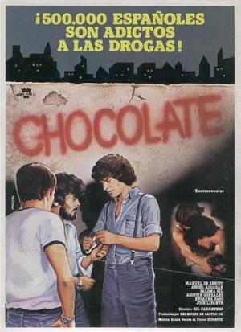
Chocolate
"El Muertes" y "El Jato" se bajan al moro a pillar chocolate pero se encuentran con problemas cuando son asaltados por gente del lugar.
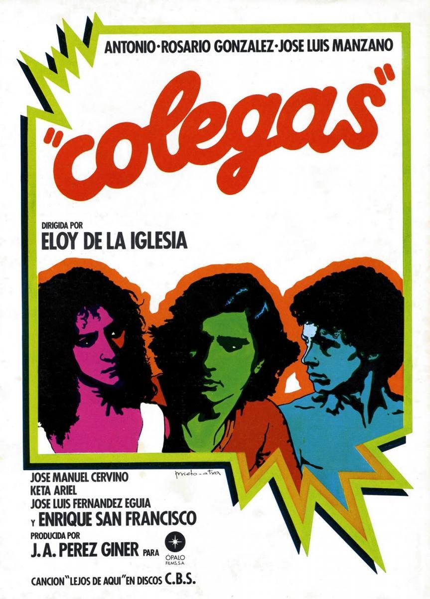
Colegas
Los hemanos Antonio y Rosario y el novio de ésta, José, deben enfrentarse diariamente a las dificultades derivadas de su humilde condición social.

Criando ratas
"El Cristo", reputado delincuente juvenil, tiene una deuda con uno de los narcotraficantes más poderosos de su barrio. Inmerso en un estado de desesperación, lleva a cabo todo tipo de actos delictivos para conseguir el dinero.

De tripas a corazón
Jaime, abogado de oficio, 40 años, consigue la libertad para "El Chirlo" delincuente ocasional, 20 años, que está acusado de un delito menor. Jaime, separado, vive con Rocío, una modelo de 25 años.

Deprisa, deprisa
Son cuatro muchachos que quieren escapar del ambiente marginal en el que viven. Para ello, necesitan conseguir dinero. Ellos solo piensan en conseguirlo rápidamente y en vivir deprisa.

El Lute: camina o revienta
Una familia nómada de cacharreros, recorre Extremadura. La vida tan dura que llevan causa la muerte de la madre. El hijo, Eleuterio Sánchez, “El Lute”, roba unas gallinas y es condenado a seis meses de cárcel.

El Lute II: mañana seré libre
Su sueño de vivir como los payos es tan fuerte que nada puede detenerlo. El reencuentro con su familia, tras escapar del penal del Puerto de Santa María, es el comienzo de una continua huida.

El pico
Un Comandante de la Guardia Civil descubre que su hijo Paco de 17 años, que espera que ingrese en la Academia Militar, es heroinómano. Urko, el mejor amigo de Paco e hijo de un dirigente abertzale, también es heroinómano.

El pico 2
Paco, hijo del comandante de la Guardia Civil Evaristo Torrecuadrada, se ha visto envuelto en Bilbao en el asesinato de una pareja de traficantes de heroína.

La estanquera de Vallecas
Leandro, un albañil en paro, y Tocho, un chaval amigo suyo, intentan atracar un estanco del madrileño barrio de Vallecas, pero la señora Justa, la estanquera, se lo impide alertando a los vecinos.

La Corea
Toni es un joven de diecisiete años que llega a Madrid en busca de trabajo. Un amigo de su mismo pueblo le pone en contacto con Charo, "la Corea", mujer madura que se dedica a facilitar muchachos a los americanos de Torrejón.

Libertad provisional
Un joven delincuente de poca monta y una vendedora de libros a domicilio, que ejerce la prostitución ocasionalmente como una derivación de su trabajo, ensayan una forma de convivencia partiendo de unos esquemas de libertad mutua...

Los Golfos
Julián, Ramón, Juan, el Chato, Paco y Manolo son seis jóvenes que sobreviven como pueden en los arrabales de Madrid. Juan quiere ser torero, y sus amigos cometen pequeños atracos para poder pagar su debut.

Los últimos golpes
Tras escapar del correccional, "El Torete" atraca un banco. Segundos después, "El Vaquilla" entra en el mismo banco para atracarlo también. No tienen más remedio que compartir el botín.
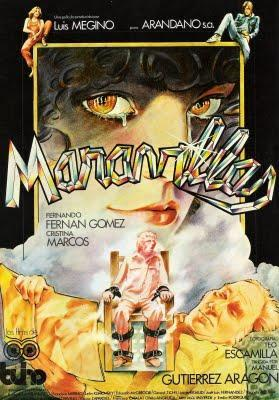
Maravillas
Una adolescente de quince años, vive con su padre, un viejo fotógrafo desempleado que le roba dinero a su hija para sus vicios. Sin embargo, Maravillas cuenta con la protección de sus padrinos.

Matar al Nani
Él cree que domina su vida. Pero la vida de Nani está ya previamente decidida por otros. Al final del gobierno de la UCD, algunos policías, montan un grupo de atracadores que roban joyerías con total impunidad para ellos.

Miedo a salir de noche
Un empleado de banco, tímido y asustadizo, va cayendo en las redes del miedo ante los acontecimientos que ve a su alrededor y la ola de delincuencia que parece invadir la ciudad en los primeros años de la transición democrática española.
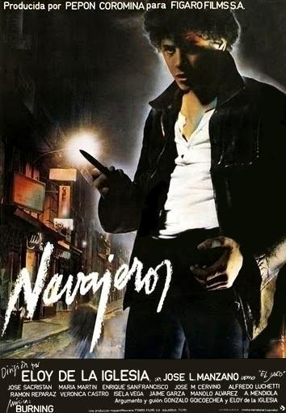
Navajeros
El Jaro, vive en Madrid con su banda y sus “novias”. Un día conoce a una prostituta que se enamora de él y le ofrece su casa para apartarlo del mundo de la delincuencia. Jaro acepta el refugio, pero sigue dando golpes con su banda.

Perras callejeras
Tres jóvenes que por distintos motivos se sienten explotadas y discriminadas por la sociedad. Crista tiene que soportar un padrastro borracho, Berta sale de la cárcel y enseguida es abordada por un proxeneta, Sole, ha caído en la droga.

Perros callejeros
Una pandilla de quinceañeros que viven en los suburbios de Barcelona se han especializado en el robo de coches. Con ellos se dedican a dar el “tirón”, a asaltar tiendas para malvender las mercancías y a atacar a parejas.

Perros callejeros 2
El Torete, es acusado de participar en un asesinato, Ayudado por sus amigos, Ángel reconstruyen los hechos que son su coartada; pero mientras está en la cárcel sufre las consecuencias del terrible motín de La Modelo.

Quinqui Stars
Documental creativo y la ficción, que comienza en los años de las transformaciones ocurridas entre los años 70 y 80 en las barriadas periféricas de Madrid, que afectaron a muchos jóvenes y les abocaron hacia la delincuencia.

Tres dias de libertad
El Gato, un conocido delincuente con una larga condena por cumplir, sale de la cárcel con motivo de un permiso de tres días de duración.

Yo el Vaquilla
El Vaquilla, está preso en el penal Ocaña 1 de Toledo. Allí narra su historia como delincuente al periodista Xavier Vinader. Huérfano de padre, el delincuente cuenta cómo cambió su infancia cuando su madre ingresó en prisión.

Todos me llaman Gato
El argumento se desarrolla al hilo de la amistad que mantienen un policía y un delincuente que se desliza por los tejados, de ahí que le llamen 'Gato'.

Volando voy
Getafe, finales de los 70. La gente mira extrañada cómo un "600" sin conductor atraviesa la calle a toda velocidad. Al volante va Juan Carlos, el Pera, un niño de 9 años con una extraordinaria habilidad para robar y conducir coches.

7 Virgenes
Es verano en un barrio obrero y marginal de una ciudad del sur. Tano, un adolescente que cumple condena en un reformatorio, recibe un permiso especial de 48 horas para asistir a la boda de su hermano Santacana.
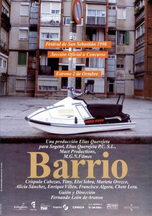
Barrio
En uno de esos barrios situados al sur de las grandes ciudades, a los que no llega ni el metro ni el dinero, Javi, Manu y Rai son compañeros de instituto, pero, sobre todo, amigos.

QHHYPME
Gloria, un ama de casa frustrada, malcasada y adicta a las anfetaminas, vive en una casa de vecinos de un barrio humilde con su marido, que es taxista, sus hijos y su suegra.

Juventud drogada
El hijo de un importante magnate farmaceutico es captado por una banda de delincuentes que se dedican al robo y al trafico de drogas.

Y ahora que señor fiscal
José, un joven que vive en un barrio obrero, está acostumbrado a sobrevivir en medio de grandes dificultades. Un verano conoce a Paloma, una chica de buena familia.

Barcelona sur
En Barcelona, una de las ciudades portuarias de Europa más apreciadas por el tráfico de drogas y la prostitución, Gumer, una chica de 25 años, sale de la cárcel obsesionada por encontrar a su antiguo novio.

Los violadores del amanecer
Una banda de delincuentes formada por cuatro chicos y una embarazada se dedican a secuestrar jovencitas para después violarlas.
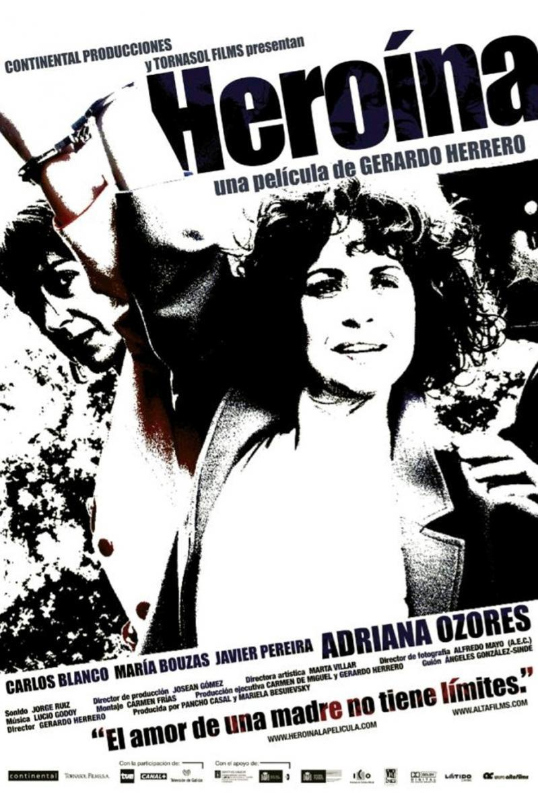
Heroina (2005)
Pilar es una mujer de 40 con tres hijos que ve como su vida cambia totalmente cuando descubre que uno de sus hijos es adicto a la heroína.
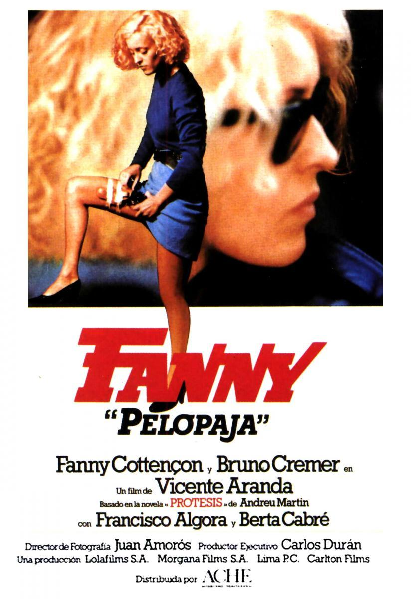
Fanny Pelopaja
En los barrios bajos de Barcelona, Fanny, una mujer que acaba de salir de la cárcel, intenta llevar a cabo una venganza que ha alimentado durante años
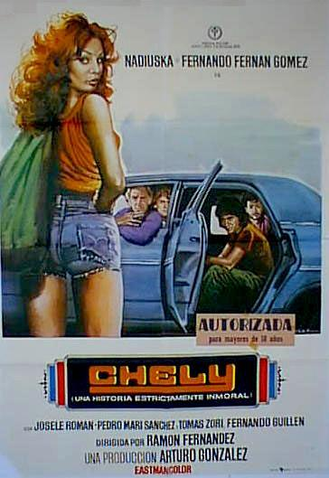
Chely
Historia de una banda de jóvenes delincuentes que busca desplumar a viejos adinerados usando los encantos de una de las componentes de la banda, una rubia despampanante

La reina del mate
La vida de Rafa, un joven cartero de barrio obrero, cambia radicalmente cuando conoce a Cristina, La Reina del Mate. Rafa se ve inmerso poco a poco en un mundo que nada tiene que ver con su vida anterior: drogas, dinero fácil y por encima de todo...

La muerte de un quinqui
Tras el asalto a una joyería, la custodia del valioso botín es encomendada temporalmente a Marcos, un peligroso psicópata. Pero Marcos tiene otros planes: huir con las joyas y buscar un comprador.
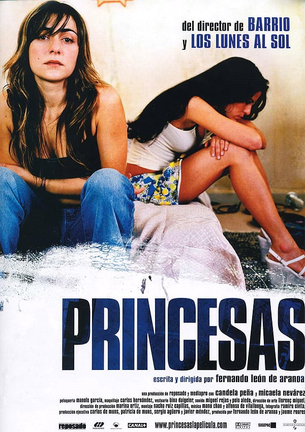
Princesas
Princesas es un drama que centra su historia en dos amigas, Caye y Zulema, que trabajan como prostitutas. Son mujeres que viven en mundos totalmente diferentes, pero un día sus vidas se cruzan.

Jovenes del barrio
Documental sobre la vida de los jóvenes del barrio de Canyelles de Barcelona. Los jóvenes hablan de la escuela, el trabajo y el paro, del ocio, las drogas y la delincuencia; de la relación entre chicos y chicas, del aprendizaje del catalán, la música, el vídeo y la cárcel.

Poligono sur
Documental sobre el famoso barrio marginal Las tres mil viviendas, en Sevilla. El barrio más problemático es también el que tiene más arte y donde se encuentran los gitanos tradicionales de Triana con las tendencias más vanguardistas.

Los tarantos
En la ciudad de Barcelona, viven dos familias gitanas rivales: Los Tarantos y Los Zorongos. Rafael, el hijo de la Taranta, conoce durante la celebración de un boda gitana a Juana, la hija del Zorongo. Los dos jóvenes se juran amor eterno con un pacto de sangre.

Todo por la pasta
Las cosas se complican cuando una banda de ladrones roba 48 millones de pesetas de un bingo sin saber que ese dinero estaba destinado a pagar a unos sicarios contratados por la policía.

Bailame el agua
Dos veinteañeros cansados de convencionalismos deciden vivir en la calle por iniciativa propia, buscándose la vida día a día..

El truco del manco
En un barrio marginal de Barcelona habitado por inmigrantes y gitanos, la vida no es fácil, sobre todo para Cuajo, un minusválido que tiene muy pocas oportunidades para integrarse socialmente.

Los placeres ocultos
Eduardo es un importante ejecutivo de mediana edad que se enamora de Miguel, un atractivo joven heterosexual de los barrios bajos. Los dos hombres establecerán una difícil relación que se verá amenazada por varios personajes.

Todo por la pasta
Tras atracar un camión blindado, un hombre y su hermano se enfrentan por el botín que han conseguido. La mujer de uno de ellos se convertirá en un problema aún mayor.

Sueños y pan
Javi y Dani roban un cuadro. Al sospechar de su cuantioso valor, ponen en marcha un plan para vender la obra. Plan que se va desmoronando a cada paso que dan.

Barcelona 92
Barcelona, año 1992. Una pelea en el barrio de Gracia termina con diversos heridos por arma blanca.

Coto de caza
Una abogada penal que se dedica a defender delincuentes con total convencimiento y no cree en la maldad natural. Esta candidez le lleva a que la banda del Mauri, a uno de cuyos integrantes defiende, le robe el coche con las cosas personales
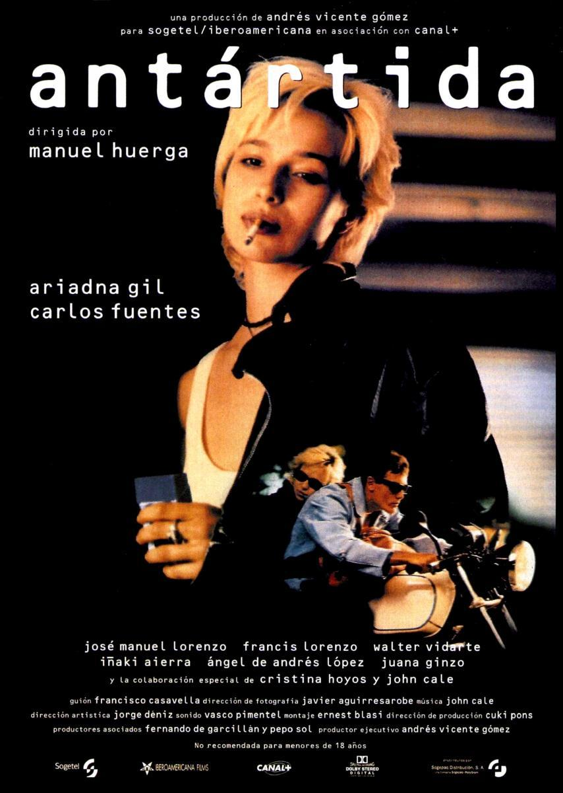
Antartida
María, adicta a la heroína y frustrada cantante de rock, ha perdido a su novio por sobredosis. No hay nada que le devuelva la esperanza, hasta que un día conoce a Rafa, un chico más joven y con las ideas mucho más claras que ella.

Las leyes de la frontera
Verano de 1978. Ignacio Cañas es un estudiante de 17 años introvertido y algo inadaptado que vive en Girona. Al conocer al Zarco y a Tere, dos jóvenes delincuentes del barrio chino de la ciudad.

Hasta el cielo
El día que Ángel habló con Estrella en aquella discoteca, su vida cambió para siempre. Tras una pelea con Poli, el posesivo novio de la chica, éste le anima a unirse a su banda de atracadores de Madrid.
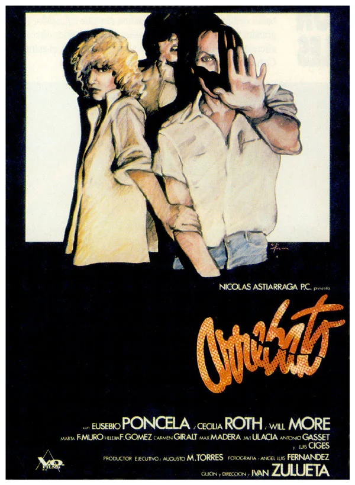
Arrebato
Jose Sirgado es un director de serie B en plena crisis creativa y personal, incapaz de romper con su expareja. Inmerso en una espiral de autodestruccion, y con las drogas.

Rejas de cristal
Un profesor se traslada de Milán a Palermo para trabajar como docente en un reformatorio lleno de jóvenes con un comportamiento agresivo y provocador.

Bajarse al moro
Chusa es una joven sin prejuicios que se saca un dinerillo extra viajando de vez en cuando a Marruecos para comprar hachís que luego vende su primo. Pero la última vez no ha tenido suerte en las aduanas.

NCNR
Varios expertos y personalidades del cine, la música, los medios de comunicación y la cultura reflexionan sobre el cine quinqui.

Can Tunis
n un barrio de Barcelona, los vecinos se manifiestan contra la expropiación de sus casas. Desde los años 80, este barrio en ruina es el principal mercado de droga de la ciudad.
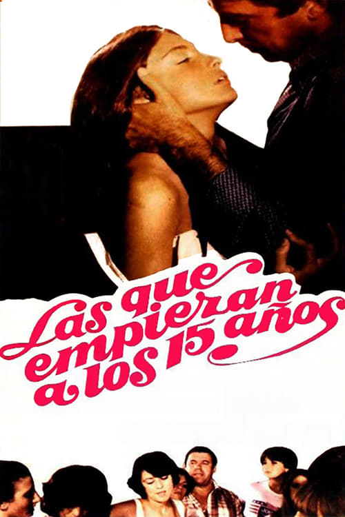
LQEAL15A
Elvira, una joven cuya vida está llena de dificultades y cuyas relaciones familiares son muy problemáticas, decide entrar en el mundo de la prostitución. Algunas amigas de su misma edad le facilitarán el camino.

¡Puta miseria!
Dos jóvenes amigos, lumpen urbanos sin trabajo, idean, conjuntamente con una colega 'camello' de profesión, la forma de salirse de la miseria en que viven: secuestrar al rico del pueblo.

Mi soledad tiene alas
En un barrio humilde a las afueras de Barcelona, Dan y sus dos amigos, Vio y Reno, viven sin pensar en el mañana, entre fiestas y robos. Detrás de su apariencia de pequeño delincuente, Dan esconde un artista con talento.